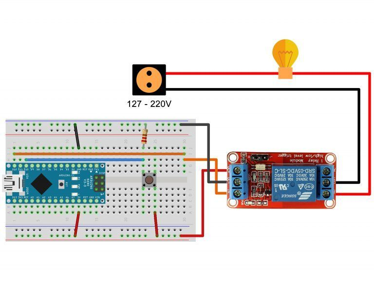

Conecte os pinos do produto em seus respectivos pinos do Arduino através de uma conexão direta ou através de uma protoboard
Monte o circuito representado abaixo.

Com Arduino Nano podemos verificar a utilização de um resistor ligando o pino de sinal do push junto ao pino GND, é uma característica muito utilizada em projetos como este que trabalham com botões para poder alterar o estado do botão e não deixa-lo sempre em um único estado e se chama pull-down.
No corpo do relé temos entre os pinos de instalação da alta tensão três terminais, o terminal COM que recebe energia direta da rede (indicado a utilização da fase sempre) e dois terminais NO (Normally Open = Normalmente Aberto) e NC (Normally Close = Normalmente Fechado).
O pino Normalmente Aberto pode dar a entender que estaria aberta a passagem de energia, mas é bem o contrário, o estado aberto está com seus terminais aberto e não conduz energia para alimentação do sistema.